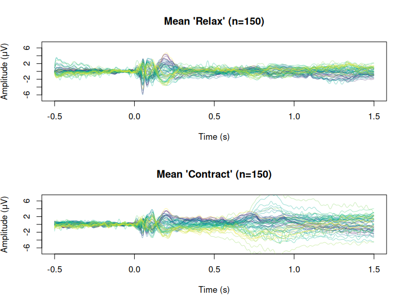

MSC1090 Assignment 8
Alex Kappen (1005305698)
Nov 15, 2026
Introduction
Transcranial Magnetic Stimulation (TMS) is a safe, FDA-approved brain stimulation treatment for psychiatric illnesses like treatment-resistant depression and obsessive-compulsive disorder (Health 2021). However, current protocols are standardized rather than personalized, largely because clinicians do not yet know how to dynamically adjust pulse shape, intensity, location, and timing across a typical 15-minute treatment session.
Personalizing TMS requires decoding real-time “brain states”—distinct patterns of neural activity measured via electroencephalography (EEG) that range from psychiatric symptoms (e.g., anxiety, rumination) to benign motor states (e.g., a relaxed or contracted arm). Combining TMS with EEG reveals these states by capturing brain excitability: for instance, stimulating the motor cortex (M1) triggers a finger twitch and produces specific EEG voltage deflections called TMS-Evoked Potentials (TEPs) (Metsomaa et al. 2021). Because TEP features can help decode underlying brain states, this report demonstrates methods for analyzing TEPs using a TMS-EEG dataset comparing “relaxed hand” and “contracted hand” states (Oostenveld et al. 2011).

Methods
1. Polynomial Fit for TEPs - I fit several high-order polynomials to one channel from each class of TEPs to model the dynamics of the TEP. Models were compared using the Akaike Information Criterion (AIC).
2. Estimation of sample mean covariance matrix - I estimated the mean covariance matrix for each class, and computed the difference between classes. Covariance matrices typically do not have Euclidean geometry, rather Riemannian geometry. I compared the use of Euclidean and Riemannian geometric methods for estimating the mean and difference between the two classes.
3. Permutation test of sample mean covariance matrices - I performed a permutation test to test the hypothesis that there was no difference in the mean covariance matrix between classes. I repeated the test using a Euclidean distance metric and a Riemannian distance metric.
4. Classification using covariance matrix features - I used features derived from the covariance matrices and the known class labels to train a Support Vector Machine to classify TEPs.
Implementation
Computations were implemented in R. Machine learning packages included caret, covariance calculation packages included corpcor and Riemann.
Results
High-order polynomials (26 for relax, 25 for contract) fit the TEPs best according the AIC metric. The permutation test showed that the mean covariance of each class failed to reject the null hypothesis considered different using a Euclidean metric (empirical p = 0.543) but rejected the null hypothesis using the Riemannian metric (empirical p = 0.011). SVM classification accuracy using Riemannian features was 63.3%.
Discussion
R was more appropriate for analyzing this data compared to Excel, SPSS, STATA, and other GUI-based tools, particularly due to the plethora of libraries available to accomplish nice analyses (Riemannian covariance matrix calculations would be extremely tedious, and possibly not acheivable, in Excel).
However, I found it was a bit more difficult to work with EEG data in R compared to MATLAB and Python, where the libraries (such as FieldTrip and MNE) are more robust and user-friendly for signal-processing.